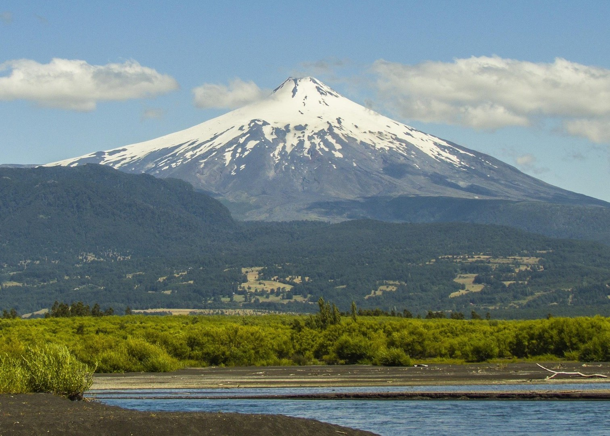
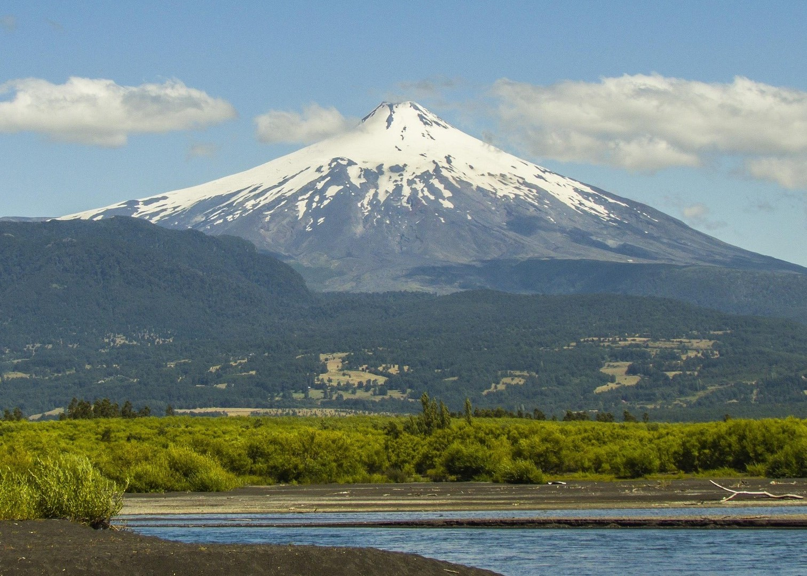

Welcome to My Travel Diary
Hello! This website is about my favorite trips and places I have visited. Traveling makes me happy and gives me amazing memories. Here you will find my special journeys and experiences.
Places I Have Visited
- Murree
- Lahore
- Kashmir
- Quetta
Things I Always Take With Me
- Camera
- Snacks
- Water Bottle
- Backpack
My Travel Pictures
 
